Non-right Triangles: Law of Cosines
Suppose a boat leaves port, travels 10 miles, turns 20 degrees, and travels another 8 miles as shown in Figure 1. How far from port is the boat?
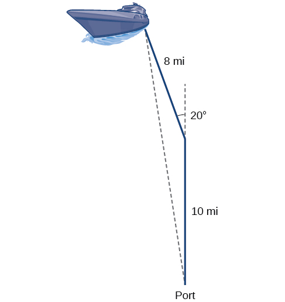
Unfortunately, while the Law of Sines enables us to address many non-right triangle cases, it does not help us with triangles where the known angle is between two known sides, a SAS (side-angle-side) triangle, or when all three sides are known, but no angles are known, a SSS (side-side-side) triangle. In this section, we will investigate another tool for solving oblique triangles described by these last two cases.
Using the Law of Cosines to Solve Oblique Triangles
The tool we need to solve the problem of the boat’s distance from the port is the Law of Cosines, which defines the relationship among angle measurements and side lengths in oblique triangles. Three formulas make up the Law of Cosines. At first glance, the formulas may appear complicated because they include many variables. However, once the pattern is understood, the Law of Cosines is easier to work with than most formulas at this mathematical level.
Understanding how the Law of Cosines is derived will be helpful in using the formulas. The derivation begins with the Generalized Pythagorean Theorem, which is an extension of the Pythagorean Theorem to non-right triangles. Here is how it works: An arbitrary non-right triangle is placed in the coordinate plane with vertex at the origin, side drawn along the x-axis, and vertex located at some point in the plane, as illustrated in Figure 2. Generally, triangles exist anywhere in the plane, but for this explanation we will place the triangle as noted.
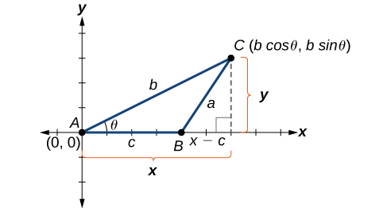
We can drop a perpendicular from to the x-axis (this is the altitude or height). Recalling the basic trigonometric identities, we know that
In terms of and The point located at has coordinates Using the side as one leg of a right triangle and as the second leg, we can find the length of hypotenuse using the Pythagorean Theorem. Thus,
The formula derived is one of the three equations of the Law of Cosines. The other equations are found in a similar fashion.
Keep in mind that it is always helpful to sketch the triangle when solving for angles or sides. In a real-world scenario, try to draw a diagram of the situation. As more information emerges, the diagram may have to be altered. Make those alterations to the diagram and, in the end, the problem will be easier to solve.
Finding the Unknown Side and Angles of a SAS Triangle
Find the unknown side and angles of the triangle in Figure 4.
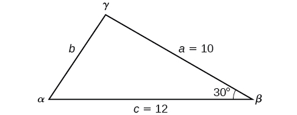
Solution
First, make note of what is given: two sides and the angle between them. This arrangement is classified as SAS and supplies the data needed to apply the Law of Cosines.
Each one of the three laws of cosines begins with the square of an unknown side opposite a known angle. For this example, the first side to solve for is side as we know the measurement of the opposite angle
Because we are solving for a length, we use only the positive square root. Now that we know the length we can use the Law of Sines to fill in the remaining angles of the triangle. Solving for angle we have
The other possibility for would be In the original diagram, is adjacent to the longest side, so is an acute angle and, therefore, does not make sense. Notice that if we choose to apply the Law of Cosines, we arrive at a unique answer. We do not have to consider the other possibilities, as cosine is unique for angles between and Proceeding with we can then find the third angle of the triangle.
The complete set of angles and sides is
Solving for an Angle of a SSS Triangle
Find the angle for the given triangle if side side and side
Solution
For this example, we have no angles. We can solve for any angle using the Law of Cosines. To solve for angle we have
See Figure 5.
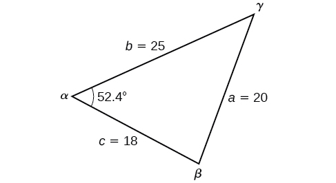
Solving Applied Problems Using the Law of Cosines
Just as the Law of Sines provided the appropriate equations to solve a number of applications, the Law of Cosines is applicable to situations in which the given data fits the cosine models. We may see these in the fields of navigation, surveying, astronomy, and geometry, just to name a few.
Using the Law of Cosines to Solve a Communication Problem
On many cell phones with GPS, an approximate location can be given before the GPS signal is received. This is accomplished through a process called triangulation, which works by using the distances from two known points. Suppose there are two cell phone towers within range of a cell phone. The two towers are located 6000 feet apart along a straight highway, running east to west, and the cell phone is north of the highway. Based on the signal delay, it can be determined that the signal is 5,050 feet from the first tower and 2,420 feet from the second tower. Determine the position of the cell phone north and east of the first tower, and determine how far it is from the highway.
Solution
For simplicity, we start by drawing a diagram similar to Figure 6 and labeling our given information.
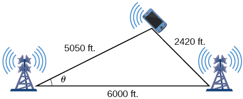
Using the Law of Cosines, we can solve for the angle Remember that the Law of Cosines uses the square of one side to find the cosine of the opposite angle. For this example, let and Thus, corresponds to the opposite side
To answer the questions about the phone’s position north and east of the tower, and the distance to the highway, drop a perpendicular from the position of the cell phone, as in Figure 7. This forms two right triangles, although we only need the right triangle that includes the first tower for this problem.
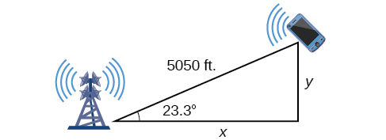
Using the angle and the basic trigonometric identities, we can find the solutions. Thus
The cell phone is approximately 4,638 feet east and 1998 feet north of the first tower, and 1998 feet from the highway.
Calculating Distance Traveled Using a SAS Triangle
Returning to our problem at the beginning of this section, suppose a boat leaves port, travels 10 miles, turns 20 degrees, and travels another 8 miles. How far from port is the boat? The diagram is repeated here in Figure 8.
Solution
The boat turned 20 degrees, so the obtuse angle of the non-right triangle is the supplemental angle, With this, we can utilize the Law of Cosines to find the missing side of the obtuse triangle—the distance of the boat to the port.
The boat is about 17.7 miles from port.
Using Heron’s Formula to Find the Area of a Triangle
We already learned how to find the area of an oblique triangle when we know two sides and an angle. We also know the formula to find the area of a triangle using the base and the height. When we know the three sides, however, we can use Heron’s formula instead of finding the height. Heron of Alexandria was a geometer who lived during the first century A.D. He discovered a formula for finding the area of oblique triangles when three sides are known.
Using Heron’s Formula to Find the Area of a Given Triangle
Find the area of the triangle in Figure 9 using Heron’s formula.
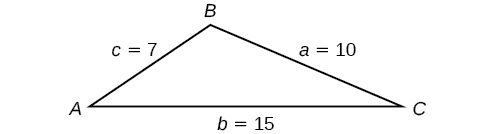
Solution
First, we calculate
Then we apply the formula.
The area is approximately 29.4 square units.
Applying Heron’s Formula to a Real-World Problem
A Chicago city developer wants to construct a building consisting of artist’s lofts on a triangular lot bordered by Rush Street, Wabash Avenue, and Pearson Street. The frontage along Rush Street is approximately 62.4 meters, along Wabash Avenue it is approximately 43.5 meters, and along Pearson Street it is approximately 34.1 meters. How many square meters are available to the developer? See Figure 10 for a view of the city property.
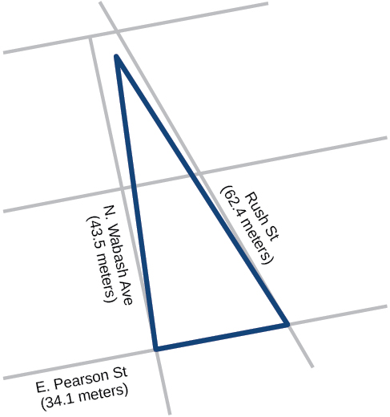
Solution
Find the measurement for which is one-half of the perimeter.
Apply Heron’s formula.
The developer has about 711.4 square meters.
Key Equations
| Law of Cosines | |
| Heron’s formula |
Key Concepts
- The Law of Cosines defines the relationship among angle measurements and lengths of sides in oblique triangles.
- The Generalized Pythagorean Theorem is the Law of Cosines for two cases of oblique triangles: SAS and SSS. Dropping an imaginary perpendicular splits the oblique triangle into two right triangles or forms one right triangle, which allows sides to be related and measurements to be calculated. See Example 1 and Example 2.
- The Law of Cosines is useful for many types of applied problems. The first step in solving such problems is generally to draw a sketch of the problem presented. If the information given fits one of the three models (the three equations), then apply the Law of Cosines to find a solution. See Example 3 and Example 4.
- Heron’s formula allows the calculation of area in oblique triangles. All three sides must be known to apply Heron’s formula. See Example 5 and See Example 6.
Section Exercises
Verbal
If you are looking for a missing side of a triangle, what do you need to know when using the Law of Cosines?
Solution
two sides and the angle opposite the missing side.
If you are looking for a missing angle of a triangle, what do you need to know when using the Law of Cosines?
Explain what represents in Heron’s formula.
Solution
is the semi-perimeter, which is half the perimeter of the triangle.
Explain the relationship between the Pythagorean Theorem and the Law of Cosines.
When must you use the Law of Cosines instead of the Pythagorean Theorem?
Solution
The Law of Cosines must be used for any oblique (non-right) triangle.
Algebraic
For the following exercises, assume is opposite side is opposite side and is opposite side If possible, solve each triangle for the unknown side. Round to the nearest tenth.
Solution
11.3
Solution
34.7
Solution
26.7
Solution
Solution
not possible
For the following exercises, use the Law of Cosines to solve for the missing angle of the oblique triangle. Round to the nearest tenth.
find angle
find angle
Solution
95.5°
find angle
find angle
Solution
26.9°
find angle
For the following exercises, solve the triangle. Round to the nearest tenth.
Solution
Solution
Solution
For the following exercises, use Heron’s formula to find the area of the triangle. Round to the nearest hundredth.
Find the area of a triangle with sides of length 18 in, 21 in, and 32 in. Round to the nearest tenth.
Solution
177.56 in2
Find the area of a triangle with sides of length 20 cm, 26 cm, and 37 cm. Round to the nearest tenth.
Solution
0.04 m2
Solution
0.91 yd2
Graphical
For the following exercises, find the length of side Round to the nearest tenth.
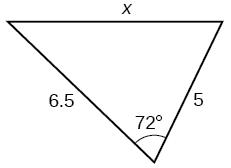
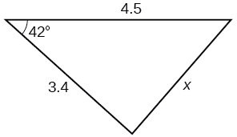
Solution
3.0
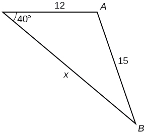
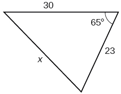
Solution
29.1
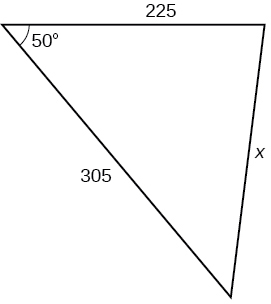
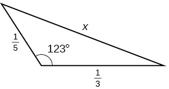
Solution
0.5
For the following exercises, find the measurement of angle
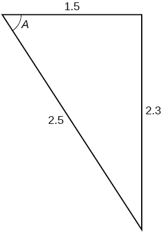
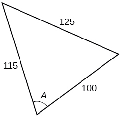
Solution
70.7°
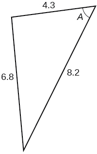
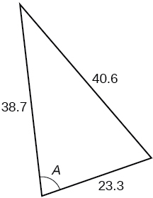
Solution
77.4°
Find the measure of each angle in the triangle shown in Figure 11. Round to the nearest tenth.
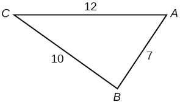
For the following exercises, solve for the unknown side. Round to the nearest tenth.
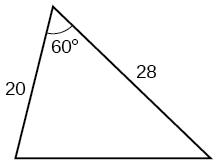
Solution
25.0
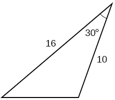
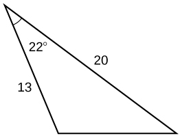
Solution
9.3
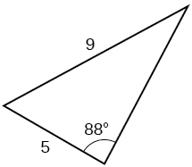
For the following exercises, find the area of the triangle. Round to the nearest hundredth.
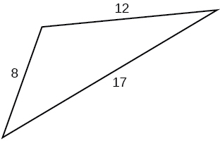
Solution
43.52
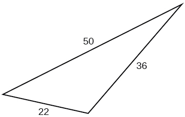
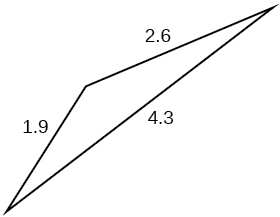
Solution
1.41
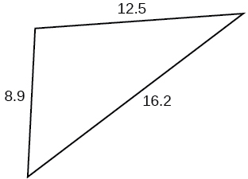
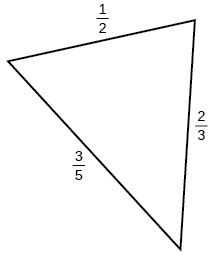
Solution
0.14
Extensions
A parallelogram has sides of length 16 units and 10 units. The shorter diagonal is 12 units. Find the measure of the longer diagonal.
The sides of a parallelogram are 11 feet and 17 feet. The longer diagonal is 22 feet. Find the length of the shorter diagonal.
Solution
18.3
The sides of a parallelogram are 28 centimeters and 40 centimeters. The measure of the larger angle is 100°. Find the length of the shorter diagonal.
A regular octagon is inscribed in a circle with a radius of 8 inches. (See Figure 12.) Find the perimeter of the octagon.
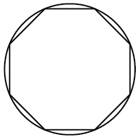
Solution
48.98
A regular pentagon is inscribed in a circle of radius 12 cm. (See Figure 13.) Find the perimeter of the pentagon. Round to the nearest tenth of a centimeter.
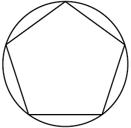
For the following exercises, suppose that represents the relationship of three sides of a triangle and the cosine of an angle.
Draw the triangle.
Solution
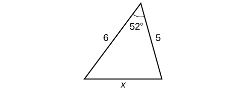
Find the length of the third side.
For the following exercises, find the area of the triangle.
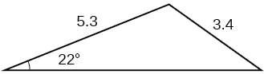
Solution
7.62
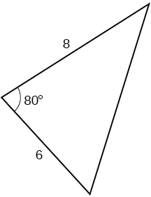
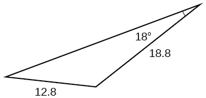
Solution
85.1
Real-World Applications
A surveyor has taken the measurements shown in Figure 14. Find the distance across the lake. Round answers to the nearest tenth.
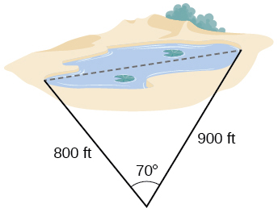
A satellite calculates the distances and angle shown in Figure 15 (not to scale). Find the distance between the two cities. Round answers to the nearest tenth.
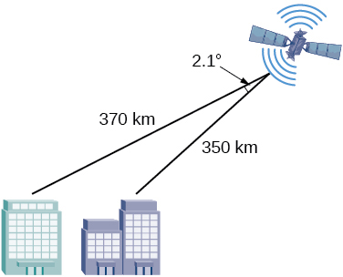
Solution
24.0 km
An airplane flies 220 miles with a heading of 40°, and then flies 180 miles with a heading of 170°. How far is the plane from its starting point, and at what heading? Round answers to the nearest tenth.
A 113-foot tower is located on a hill that is inclined 34° to the horizontal, as shown in Figure 16. A guy-wire is to be attached to the top of the tower and anchored at a point 98 feet uphill from the base of the tower. Find the length of wire needed.

Solution
99.9 ft
Two ships left a port at the same time. One ship traveled at a speed of 18 miles per hour at a heading of 320°. The other ship traveled at a speed of 22 miles per hour at a heading of 194°. Find the distance between the two ships after 10 hours of travel.
The graph in Figure 17 represents two boats departing at the same time from the same dock. The first boat is traveling at 18 miles per hour at a heading of 327° and the second boat is traveling at 4 miles per hour at a heading of 60°. Find the distance between the two boats after 2 hours.
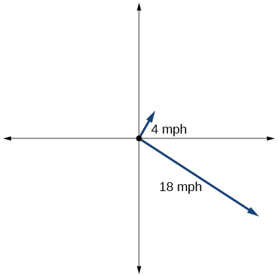
Solution
37.3 miles
A triangular swimming pool measures 40 feet on one side and 65 feet on another side. These sides form an angle that measures 50°. How long is the third side (to the nearest tenth)?
A pilot flies in a straight path for 1 hour 30 min. She then makes a course correction, heading 10° to the right of her original course, and flies 2 hours in the new direction. If she maintains a constant speed of 680 miles per hour, how far is she from her starting position?
Solution
2371 miles
Los Angeles is 1,744 miles from Chicago, Chicago is 714 miles from New York, and New York is 2,451 miles from Los Angeles. Draw a triangle connecting these three cities, and find the angles in the triangle.
Philadelphia is 140 miles from Washington, D.C., Washington, D.C. is 442 miles from Boston, and Boston is 315 miles from Philadelphia. Draw a triangle connecting these three cities and find the angles in the triangle.
Solution
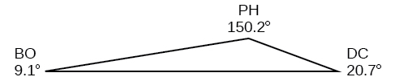
Two planes leave the same airport at the same time. One flies at 20° east of north at 500 miles per hour. The second flies at 30° east of south at 600 miles per hour. How far apart are the planes after 2 hours?
Two airplanes take off in different directions. One travels 300 mph due west and the other travels 25° north of west at 420 mph. After 90 minutes, how far apart are they, assuming they are flying at the same altitude?
Solution
292.4 miles
A parallelogram has sides of length 15.4 units and 9.8 units. Its area is 72.9 square units. Find the measure of the longer diagonal.
The four sequential sides of a quadrilateral have lengths 4.5 cm, 7.9 cm, 9.4 cm, and 12.9 cm. The angle between the two smallest sides is 117°. What is the area of this quadrilateral?
Solution
65.4 cm2
The four sequential sides of a quadrilateral have lengths 5.7 cm, 7.2 cm, 9.4 cm, and 12.8 cm. The angle between the two smallest sides is 106°. What is the area of this quadrilateral?
Find the area of a triangular piece of land that measures 30 feet on one side and 42 feet on another; the included angle measures 132°. Round to the nearest whole square foot.
Solution
468 ft2
Find the area of a triangular piece of land that measures 110 feet on one side and 250 feet on another; the included angle measures 85°. Round to the nearest whole square foot.
Analysis
Because the inverse cosine can return any angle between 0 and 180 degrees, there will not be any ambiguous cases using this method.